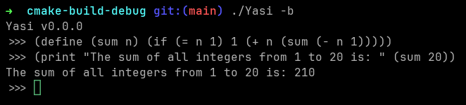

Yasi (Yet another scheme implementation)
Yasi is my own implementation of the Scheme dialect of the Lisp programming language, written from scratch in C++.

Roadmap
- REPL Loop
- Load and execute files
- Basic arithmetic operations (+-*/)
- Print statement
- Input statement
- Variables
- Conditional statements
- Functions
- Lambda functions
- Lists
- Macros
- Load and execute libraries
- Mathematical functions (sin, cos, tan, etc.)
- Compilation to bytecode
- Bytecode execution
- Bytecode optimization
- Tail call optimization
- Error handling (WIP)
- Garbage collection
- Windows Support